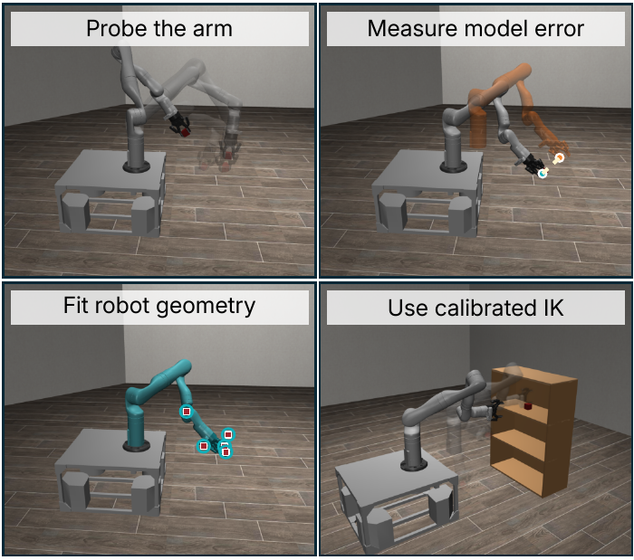

WHEN SOURCE CODE HELPS
From no successes
to 57%.
On SweepIntoDrawer, access to source code raises Claude Code’s mean success from 0% to 57%. The agent discovers it can use the gripper itself to sweep.
A study of coding agents & physical reasoning
Give an agent a simulator. Let it write a program.
See how far that program generalizes.
01 / THE BIG PICTURE
Can a general-purpose coding agent discover the physical reasoning needed for task and motion planning? We let agents investigate a simulator, develop a policy, and test that frozen program on unseen instances.
02 / THE METHOD
The agent tests its assumptions, uses what it observes to improve its program, then freezes the code for unseen instances. Follow one real Shelf run from an inaccurate arm model to a reusable policy.
reset + stepNo simulator source or hand-designed planning abstractions.
DURING SYNTHESIS
The arm stalls against the floor, even though the agent’s initial model predicts clearance. It needs to measure the robot’s actual geometry.
DURING SYNTHESIS
Observed block positions let the agent fit six parameters for the robot mount and grasp offsets. It uses the calibrated model for inverse kinematics and refines its policy.
HELD-OUT EVALUATION
Evaluate the program on 100 unseen instances with different configurations. The coding agent is no longer involved: the program computes the actions itself.

WHAT CHANGED BETWEEN STAGES 1 AND 2?
The agent compares where its model predicts the held block will be with where the simulator says it is. Fitting the geometry brings those positions much closer together.
The calibrated model helps the policy solve inverse kinematics. These errors describe the calibration observations; held-out task success is evaluated separately in stage 3.
03 / THE LEADERBOARD
Five runs. One hundred held-out instances per environment. Explore the results across both geometric and dynamic tasks.
Download the results ↓Loading the paper’s results…
| Rank | Method / backend | Environment access | Coverage |
|---|
Equal-environment averages of the rounded means in Tables I–II. The source-access reference is listed separately. Missing planner results are excluded from its average.
Read the tables ↗More coding agents on the way.
04 / A CLOSER LOOK
Explore all 28 environments. Compare every method, including the range across synthesis runs, alongside an example rollout.
Bars show mean success; brackets give min–max across the five runs. Example videos illustrate behavior and do not represent an average run.
WHEN SOURCE CODE HELPS
On SweepIntoDrawer, access to source code raises Claude Code’s mean success from 0% to 57%. The agent discovers it can use the gripper itself to sweep.
FAST PROGRAMS AT TEST TIME
Policy computation per action. Equal-environment means on 44 matched seeds across 13 environments where both settings achieve 100% success. Table III.
05 / THE GALLERY
Unexpected tool use, clever workarounds, and recovery from failure. A few moments worth watching.
EXPLORE THE RESEARCH